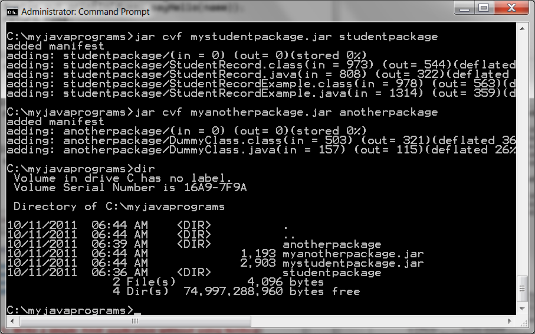

Java Package and Classpath

The goal of this hands-on lab is to get
you exposed to the concept of
Java classpath and how it affects compilation and execution of Java
programs. The classpath is the most basic but essential concept
you will need to understand - it is basically a location where
*.class files reside. If the classpath is not set up
correctly, you will experience the infamous
"java.lang.NoClassDefFoundError: <name of the class file>"
exception.
Expected duration: 90 minutes


Resources
Change Log
- Jan. 29th, 2007: Created
- Oct. 1st, 2007: Some cosmetic changes
- Sep. 10th, 2008: Some wording is changed
- Oct. 11th, 2011: Exercise 3 is added (Sang Shin)
Lab Exercises
Exercise 1: Experiment with class path
with the Hello program at the command line
Please do this exercise at the command
line (in a terminal window). In this exercise, you are going to
play around with the class path with a simple program which has a
single class.
(1.0)
Build Hello program using "javac" and "java" at the command line
This step is something you've done as
part of Exercise
1 of the LAB-1001: Getting to know your Java programming environment
hands-on lab. The same step is quoted here just in case you
have not done it.
1. Create a directory where you are
going
to
write Java programs. (This is something you have done in the previous
hands
C:\>mkdir
c:\myjavaprograms
C:\>cd \myjavaprograms
2. Write Hello.java
using
your editor of choice such as notepad on Windows platform or gedit on
Solaris platform (in this example, I am using jedit) as shown in Code-1.10
below.
C:\myjavaprograms>jedit
Hello.java
public class Hello {
/**
* My first Java program
*/
public static void main( String[] args ){
// Print the string "Hello
world" on screen
System.out.println("Hello
world");
}
} |
Code-1.10: Hello.java
3. Compile
Hello.java using
javac
compiler. The
javac compiler
comes with J2SE SDK you've download. It resides in
%JAVA_HOME%\bin (Windows) or
$JAVA_HOME/bin (MacOS/Linux)
directory. The result of compilation will be the creation of
Hello.class file.
C:\myjavaprograms>javac
Hello.java
4. Make sure
Hello.class file
has been created. The
Hello.class
file contains bytecode representation of the Hello class.
C:\myjavaprograms>dir Hello.class
Volume in drive C is ACER
Volume Serial Number is 58CE-B0DC
Directory of C:\myjavaprograms
01/19/2007 12:16
AM
415 Hello.class
1
File(s)
415 bytes
0 Dir(s) 21,578,907,648 bytes free
5. Run the
Hello program
using
java command.
C:\myjavaprograms>java
Hello
Hello world
return to top of the exercise
(1.1)
Exercise with "-classpath" or "-cp" option when running "java" command
<Learning point> The "-classpath <path>" or "-cp <path>" option specifies
the location where the class files (in this example, we have only a
single class file called Hello.class)
reside. When you don't specify the classpath option, the Java
interpreter tries to find the class files in the directories specified
in the CLASSPATH environment variables or in a current directory.
In fact, the Java interpreter tries to find the class files in
the following order.
- In the directories you specify with -classpath or -cp option.
- In the directories that are specified in the CLASSPATH environment variable
(only if
you have not specified the -classpath
or -cp option)
- In the currently directory (If you have not specified the
-classpath or -cp option and the environment variable CLASSPATH is not
set)
1. Run the Hello program using java
command with -cp . (there
is a space then a dot after -cp
followed by a space) option or -classpath option.
(there is a space then a dot after -classpath followed by a space) .
C:\myjavaprograms>java
-cp . Hello
Hello world
C:\myjavaprograms>java
-classpath . Hello
Hello world
2. Run "
java
-classpath .. Hello" to
see if
it still works. (Instead of single dot ., you specify double dots
.. between
-classpath and
Hello. The double dot ..
specifies a parent directory of the current directory,
C:\
in this example while single dot .
specifies the current
directory,
c:\myjavaprograms
in this example.) It should fail as
following. It is because you set
the classpath to a parent directory, C:\, which does not contain
Hello.class
file.
C:\myjavaprograms>java -classpath .. Hello
Exception in thread "main" java.lang.NoClassDefFoundError: Hello
3. Now copy the
Hello.class
file to the parent directory and try
the above command again. You should see the following
result. Give some thought why some succeeds and some fails.
C:\myjavaprograms>move
Hello.class .. (move
the Hello.class to parent directory)
C:\myjavaprograms>java
-classpath
.. Hello (run the program
using the classpath set
to the parent directory)
Hello world
C:\myjavaprograms>java -classpath
C:\ Hello (same as above, you
the classpath
explicitly)
Hello world
C:\myjavaprograms>java -classpath .
Hello (this should fail
because you no longer
have Hello.class in the current directory)
Exception in thread "main" java.lang.NoClassDefFoundError: Hello
4. You can specify multiple directories for the -classpath and -cp
option.
C:\myjavaprograms>java -classpath .;..;c:\tmp
Hello (if the Hello.class
file is found in one of the three directories, it should work.)
Hello world
return
to top of
the exercise
(1.2)
Exercise with CLASSPATH environment variable
<Learning point> You can set system
wide classpath via CLASSPATH environment
variable.
This classpath gets applied system-widely meaning it gets applied to
all Java programs running on that platform. Of course, you can
override it via -classpath or -cp option when you run a particular
program.
1. Set the environment variable CLASSPATH
first to the directory
that contains Hello.class file and then run the program.
C:\myjavaprograms>set
CLASSPATH=c:\myjavaprograms (Set
the CLASSPATH environment variable)
C:\myjavaprograms>java Hello
(You are going to experience the
Exception below because you don't
have Hello.class in the currently anymore since you moved it to a
parent directory in the previous step)
Exception in thread "main" java.lang.NoClassDefFoundError: Hello
C:\myjavaprograms>move
..\Hello.class . (Move the
Hello.class back to the currently
directory)
C:\myjavaprograms>java Hello (It should work now)
Hello world
2. Set the environment variable CLASSPATH
to a bogus directory and then
run the program.
C:\myjavaprograms>set
CLASSPATH=c:\tmp (Set the
CLASSPATH environment variable to
a bogus directory, c:\tmp)
C:\myjavaprograms>java Hello
(This should
fail since the c:\tmp directory does not contain Hello.class file)
Exception in thread "main" java.lang.NoClassDefFoundError: Hello
C:\myjavaprograms>java -cp . Hello
(Now
you are overriding the CLASSPATH with your own classpath)
Hello world
3. Set the environment variable CLASSPATH to a set of directories and
then run the program.
C:\myjavaprograms>set
CLASSPATH=c:\tmp;c:\myjavaprograms (Each directory is searched in sequence)
C:\myjavaprograms>java Hello (This should work since c:\myjavaprograms
directory has the Hello.class file)
Hello world
<Learning point> As you've seen
above, you can set the environment variable CLASSPATH to a set of
directories. For Windows, you use semi-colon ; while on
MacOS/Linux platform, you use colon : as a delimiter.
return
to top of
the exercise
Summary
In this exercise, you learned how to use
-classpath option and how to set and use CLASSPATH environment variabl.
Return
to the top
Exercise 2: Experiment with the class path
with the StudentRecordExample program at the command line
Please do this exercise at the command
line (in a terminal window). In
this exercise, you are going to play around with the class path with
StudentRecordExample program
first without a package statement
and then
with package statement.
Please note that one of the benefits of
using an IDE is IDE handles all the class path issues for you so that
you don't have to worry about it yourself.
- Write StudentRecord.java and
StudentRecordExample.java without package statement
- Add package statement to StudentRecord.java and
StudentRecordExample.java
- Add a class from a different package
(2.1)
Write StudentRecord.java and StudentRecordExample.java without package
statement
1. Write
StudentRecord.java
using
your editor of choice (in this example, I am using
jedit) as shown in Code-2.10
below. You can cut and paste
the code from the Code-2.10.
C:\myjavaprograms>jedit StudentRecord.java
public
class StudentRecord {
// Declare instance variables.
private String name;
private double mathGrade;
private double englishGrade;
private double scienceGrade;
private double average;
// Declare static variables.
private static int studentCount = 0;
public String getName(){
return name;
}
public void setName(String temp ){
name =temp;
}
public double getAverage(){
double result =0;
return result;
}
public static int getStudentCount(){
return studentCount;
}
public static void increaseStudentCount(){
studentCount++;
}
}
|
Code-2.10: StudentRecord.java
2. Write
StudentRecordExample.java
using
your editor of choice (in this example, I am using
jedit) as shown in Code-2.11
below. You can cut and paste
the code from the Code-2.11. Note that StudentRecordExample class
uses StudentRecord class.
C:\myjavaprograms>jedit StudentRecordExample.java
public class
StudentRecordExample {
public static void main(String[] args) {
// Create an object instance
of StudentRecord class.
StudentRecord annaRecord
=new StudentRecord();
// Increament the
studentCount by invoking a static method.
StudentRecord.increaseStudentCount();
// Create another object
instance of StudentRecord class.
StudentRecord beahRecord
=new StudentRecord();
// Increament the
studentCount by invoking a static method.
StudentRecord.increaseStudentCount();
// Create the 3rd object
instance of StudentRecord class.
StudentRecord crisRecord
=new StudentRecord();
// Increament the
studentCount by invoking a static method.
StudentRecord.increaseStudentCount();
// Set the names of the
students.
annaRecord.setName("Anna");
beahRecord.setName("Beah");
crisRecord.setName("Cris");
// Print anna's name.
System.out.println("Name = "
+ annaRecord.getName());
// Print number of students.
System.out.println("Student
Count = "+StudentRecord.getStudentCount());
}
}
|
Code-2.11: StudentRecordExample.java
3. Delete previously created class files so that we can start from
clean state.
C:\myjavaprograms>del *.class (Delete all class files.)
4. Compile code by specifying the two files with javac.
C:\myjavaprograms>javac StudentRecord.java
StudentRecordExample.java (This
should succeed.)
C:\myjavaprograms>dir
Student*.class (You
shoud see two class files, StudentRecord.class and
StudentRecordExample.class)
Volume in drive C is ACER
Volume Serial Number is 58CE-B0DC
Directory of C:\myjavaprograms
01/27/2007 07:29
PM
1,266 StudentRecord.class
01/27/2007 07:29
PM
1,065 StudentRecordExample.class
5. Run the program.
C:\myjavaprograms>
java -cp . StudentRecordExample (
This should succeed because the class
files are in the current directory.)
Name = Anna
Student Count = 3
return
to top of
the exercise
(2.2)
Add package statement to StudentRecord.java and
StudentRecordExample.java
In this step, you are going to explore the relationship between the
class path and packaging structure. One of the benefits of using
an IDE is that IDE handles all the intricacies related to class
path and pacakge meaning if there is an error it will let you
know right away.
1. Modify
StudentRecord.java
as shown in Code-2.20 below. The code fragment that needs to be added
is highlighted in bold and blue-colored font. The modification is
to add the
package statement
at the top of the file.
// This class now
belongs to studentpackage package.
package
studentpackage;
public class StudentRecord {
// Declare instance variables.
private String name;
private double mathGrade;
private double englishGrade;
private double scienceGrade;
private double average;
// Declare static variables.
private static int studentCount = 0;
public String getName(){
return name;
}
public void setName(String temp ){
name =temp;
}
public static int getStudentCount(){
return studentCount;
}
public static void increaseStudentCount(){
studentCount++;
}
} |
Code-2.20: package statement is added
2. Modify
StudentRecordExample.java
as
shown in Code-2.21 below. The code fragment that needs to be added is
highlighted in bold and blue-colored font. The modification is to
add
the
package statement at the
top of the file.
// This class now
belongs to studentpackage package.
package
studentpackage;
public class StudentRecordExample {
public static void main(String[] args) {
// Create an object instance
of StudentRecord class.
StudentRecord annaRecord
=new StudentRecord();
// Increament the
studentCount by invoking a static method.
StudentRecord.increaseStudentCount();
// Create another object
instance of StudentRecord class.
StudentRecord beahRecord
=new StudentRecord();
// Increament the
studentCount by invoking a static method.
StudentRecord.increaseStudentCount();
// Create the 3rd object
instance of StudentRecord class.
StudentRecord crisRecord
=new StudentRecord();
// Increament the
studentCount by invoking a static method.
StudentRecord.increaseStudentCount();
// Set the names of the
students.
annaRecord.setName("Anna");
beahRecord.setName("Beah");
crisRecord.setName("Cris");
// Print anna's name.
System.out.println("Name = "
+ annaRecord.getName());
// Print number of students.
System.out.println("Student
Count = "+StudentRecord.getStudentCount());
}
} |
Code-2.21: package statement is added
3. Delete previously created class files so that we can start from
clean state.
C:\myjavaprograms>del *.class (Delete all class files.)
4. Compile code by specifying the two files with javac.
C:\myjavaprograms>javac StudentRecord.java
StudentRecordExample.java (This
should succeed.)
C:\myjavaprograms>dir Student*.class
Volume in drive C is ACER
Volume Serial Number is 58CE-B0DC
Directory of C:\myjavaprograms
01/27/2007 07:29
PM
1,266 StudentRecord.class
01/27/2007 07:29
PM
1,065 StudentRecordExample.class
5. Run the program. You should experience
java.lang.NoClassDefFoundError:
StudentRecordExample exception.
C:\myjavaprograms>java -cp . StudentRecordExample (This should fail.)
Exception in thread "main" java.lang.NoClassDefFoundError:
StudentRecordExample
(wrong name:
studentpackage/StudentRecordExample)
at
java.lang.ClassLoader.defineClass1(Native Method)
at
java.lang.ClassLoader.defineClass(Unknown Source)
at
java.security.SecureClassLoader.defineClass(Unknown Source)
at
java.net.URLClassLoader.defineClass(Unknown Source)
at
java.net.URLClassLoader.access$100(Unknown Source)
at
java.net.URLClassLoader$1.run(Unknown Source)
at
java.security.AccessController.doPrivileged(Native Method)
at
java.net.URLClassLoader.findClass(Unknown Source)
at
java.lang.ClassLoader.loadClass(Unknown Source)
at
sun.misc.Launcher$AppClassLoader.loadClass(Unknown Source)
at
java.lang.ClassLoader.loadClass(Unknown Source)
at
java.lang.ClassLoader.loadClassInternal(Unknown Source)
<Learning point> The exception
occurs because the java
runtime tries to find StudentRecordExample.class
under the studentpackage directory
(starting from the current class path, which is set as current
directory) since the StudentRecordExample.java
now has a package
studentpackage; statement,
which indicates that the Java class file resides under studentpackage directory.
6. Create a new directory called
strudentpackage
and then move
StudentRecord.java
and
StudentRecordExample.java under
it.
C:\myjavaprograms>mkdir studentpackage (Create a
subdirectory called studentpackage
under the current directory.)
C:\myjavaprograms>move
StudentRecord.java studentpackage (Move StudentRecord.java
under studentpackage subdirectory)
C:\myjavaprograms>move
StudentRecordExample.java studentpackage (Move
StudentRecordExample.java under studentpackage subdirectory)
<Learning point> The *.java files
which have package statement have to be located in the actual directory
structure that reflects the directory specified in the package
statement.
7. Compile the code. You get this compile error because you are
trying to
compile the two Java files that are not present in the current
directory anymore.
C:\myjavaprograms>del *.class
C:\myjavaprograms>javac
StudentRecord.java
StudentRecordExample.java
error: cannot read:
StudentRecord.java
1 error
8. Compile the code using path of the *.java files. The
compilation should succeed. Note that the class
files are now created under
studentpackage
directory not in the current
directory. Note that
javac compiler
creates class files reflecting the
directory structure of the Java source files.
C:\myjavaprograms>javac
studentpackage/StudentRecord.java
studentpackage/StudentRecordExample.java
C:\myjavaprograms>dir
studentpackage
Directory of C:\myjavaprograms\studentpackage
01/27/2007 08:09 PM
<DIR> .
01/27/2007 08:09 PM
<DIR> ..
01/27/2007 08:02
PM
694 StudentRecord.java
01/27/2007 08:01
PM
1,343 StudentRecordExample.java
01/27/2007 08:14
PM
738 StudentRecord.class
01/27/2007 08:14
PM
978 StudentRecordExample.class
9. Run the program by providing using
"-classpath
." option.
C:\myjavaprograms>java
-classpath .
StudentRecordExample
Exception in thread "main"
java.lang.NoClassDefFoundError: StudentRecordExample
<Explanation> Please note that
you get java.lang.NoClassDefFoundError:
StudentRecordExample exception. This occurs because the
Java runtime tries to find StudentRecordExample.class
in a directory (or directoties) specified through -classpath option. And there
is only one directory in the class path in our example, which is the
current directory
and the current directory does not have the StudentRecordExample.class
file, hence the exception.
10. Run the program by providing using "
-classpath
studentpackage"
option.
C:\myjavaprograms>java
-classpath studentpackage
StudentRecordExample
Exception in thread "main"
java.lang.NoClassDefFoundError: StudentRecordExample
(wrong name: studentpackage/StudentRecordExample)
at
java.lang.ClassLoader.defineClass1(Native Method)
at
java.lang.ClassLoader.defineClass(Unknown Source)
at
java.security.SecureClassLoader.defineClass(Unknown Source)
at
java.net.URLClassLoader.defineClass(Unknown Source)
at
java.net.URLClassLoader.access$100(Unknown Source)
at
java.net.URLClassLoader$1.run(Unknown Source)
at
java.security.AccessController.doPrivileged(Native Method)
at
java.net.URLClassLoader.findClass(Unknown Source)
at
java.lang.ClassLoader.loadClass(Unknown Source)
at
sun.misc.Launcher$AppClassLoader.loadClass(Unknown Source)
at
java.lang.ClassLoader.loadClass(Unknown Source)
at
java.lang.ClassLoader.loadClassInternal(Unknown Source)
<Explanation> Please note that
you still get java.lang.NoClassDefFoundError:
StudentRecordExample
exception. But this time, the exception also says (wrong name:
studentpackage/StudentRecordExample) in the second line. This typically indicates
that the Java runtime finds the class file but somehow the package
directory structure specified in the class file does not match the
actual directory structure. For exmaple, in this particular
example, the Java runtime tries to find
StudentRecordExample.class file
in the class path first. (The -classpath option is set to studentpackage
directory.) And it finds it. That is the reason you don't
get a
single one line exception as you've seen in the above step.
Now once the class file is found, the Java runtime verifies package
hierarchy specified in the class file, which is studentpackage with the actual
directory structure - remember in Java platform, the package structure
must reflect the actual directory structue. In other
words, the Java rumtime tries to find ./studentpackage/StudentRecordExample.class
file under the class path.
Since the class path is set to studentpackage
directory, basicslly it
is looking for
./studentpackage/studentpackage/StudentRecordExample.class,
which does
not exist.
11. Run the program by providing using
"-classpath
." option but with the proper
path to the class file.
C:\myjavaprograms>java
-classpath . studentpackage.StudentRecordExample
Name = Anna
Student Count = 3
<Explanation> It succeeds because
the Java runtime finds the studentpackage/StudentRecordExample.class (StudentRecordExample.class
file under any directories specified through the -classpath option. In
our example here, there is only one directory set via -classpath, which
is the current directory. Once the class file is found, the Java
runtime verifies package
hierarchy specified in the class file, which is studentpackage with the actual
directory structure - remember in Java platform, the package structure
must reflect the actual directory structue. In other
words, the Java rumtime tries to find ./studentpackage/StudentRecordExample.class
file under the class path.
Since the class path is set to the current
directory, basicslly it
is looking for
./studentpackage/StudentRecordExample.class,
which does exist.
12. Run the program with "
classpath
-studentpackage" option but with the proper path to the class
file.
C:\myjavaprograms>java -classpath
studentpackage
studentpackage.StudentRecordExample
Exception in thread "main" java.lang.NoClassDefFoundError:
studentpackage/StudentRecordExample
<Explanation> It fails because
the Java runtime tries to find the studentpackage/StudentRecordExample.class (StudentRecordExample.class
file under studentpackage directory)
starting from the class path, which is set to studentpackage. In other
words, it is trying to find studentpackage/studentpackage/StudentRecordExample.class.
13. Run the program under the C:\myjavaprograms\studentpackage
directory.
C:\myjavaprograms>cd studentpackage
C:\myjavaprograms\studentpackage>java -classpath . StudentRecordExample
Exception in thread "main" java.lang.NoClassDefFoundError:
StudentRecordExample
(wrong name: studentpackage/StudentRecordExample)
at
java.lang.ClassLoader.defineClass1(Native Method)
at
java.lang.ClassLoader.defineClass(Unknown Source)
at
java.security.SecureClassLoader.defineClass(Unknown Source)
at
java.net.URLClassLoader.defineClass(Unknown Source)
at
java.net.URLClassLoader.access$100(Unknown Source)
at
java.net.URLClassLoader$1.run(Unknown Source)
at
java.security.AccessController.doPrivileged(Native Method)
at
java.net.URLClassLoader.findClass(Unknown Source)
at
java.lang.ClassLoader.loadClass(Unknown Source)
at
sun.misc.Launcher$AppClassLoader.loadClass(Unknown Source)
at
java.lang.ClassLoader.loadClass(Unknown Source)
at
java.lang.ClassLoader.loadClassInternal(Unknown Source)
<Explanation> Java runtime finds the StudentRecordExample.class OK under
the currently class path, which is set to
C:\myjavaprograms\studentpackage. Now it fails for the same
reason mentioned in step 10 above.
14. Run the program under the
C:\myjavaprograms\studentpackage
directory with proper classpath and path to the class file.
C:\myjavaprograms\studentpackage>java -classpath ..
studentpackage.StudentRecordExample
Name = Anna
Student Count = 3
15. Run the program under the C:\
directory with proper classpath and path to the class file.
C:\myjavaprograms>cd \
(2.3)
Add another class that has a different package
1. Create another directory called anotherpackge where you are going to
write a new Java program.
C:\myjavaprograms>mkdir anotherpackage
2. Write
DummyClass.java as
shown in Code-2.31 below under
anotherpackage
directory.
C:\myjavaprograms>cd anotherpackage
C:\myjavaprograms\anotherpackage>jedit
DummyClass.java
package anotherpackage;
public class DummyClass {
public String sayHello(String name){
return "Hello, I am
dummy. Your name is " + name;
}
}
|
Code-2.31: DummyClass.java
3. Modify
StudentRecord.java
to use
DummyClass as shown in
Code-2.32 below. The code fragments that need to be added are
highlighted in bold and blue-colored font.
// This class now belongs to
studentpackage package.
package studentpackage;
// Import packages
import anotherpackage.*;
public class StudentRecord {
// Declare instance variables.
private String name;
private double mathGrade;
private double englishGrade;
private double scienceGrade;
private double average;
// Declare static variables.
private static int studentCount = 0;
public String getName(){
DummyClass dummy =
new DummyClass();
System.out.println(dummy.sayHello(name));
return name;
}
public void setName(String temp ){
name =temp;
}
public static int getStudentCount(){
return studentCount;
}
public static void increaseStudentCount(){
studentCount++;
}
} |
Code-2.32: Modified StundentRecord.java
4. Compile the code and verify that the class files are present.
C:\myjavaprograms\anotherpackage>
cd
\myjavaprograms
C:\myjavaprograms>javac -cp . studentpackage/*.java
C:\myjavaprograms>javac
-cp . anotherpackage/*.java
C:\myjavaprograms>dir studentpackage
01/27/2007 09:19 PM
<DIR> .
01/27/2007 09:19 PM
<DIR> ..
01/27/2007 09:27
PM
1,345 StudentRecordExample.java
01/28/2007 08:28
AM
827 StudentRecord.java
01/28/2007 08:30
AM
973 StudentRecord.class
01/28/2007 08:30
AM
978 StudentRecordExample.class
C:\myjavaprograms>dir anotherpackage
01/28/2007 08:03 AM
<DIR> .
01/28/2007 08:03 AM
<DIR> ..
01/28/2007 08:27
AM
165 DummyClass.java
01/28/2007 08:30
AM
503 DummyClass.class
5. Run the program.
C:\myjavaprograms>java
-classpath . studentpackage.StudentRecordExample
Hello, I am dummy. Your name is Anna
Name = Anna
Student Count = 3
|
Summary
In this exercise, you have explored
the relationship between class path and packaging structure.
return to the top
Exercise 3: Using jar files in a classpath
(3.1)
Create jar files
C:\myjavaprograms>jar cvf mystudentpackage.jar studentpackage
added manifest
adding: studentpackage/(in = 0) (out= 0)(stored 0%)
adding: studentpackage/StudentRecord.class(in = 973) (out=
544)(deflated 44%)
adding: studentpackage/StudentRecord.java(in = 808) (out= 322)(deflated
60%)
adding: studentpackage/StudentRecordExample.class(in = 978) (out=
563)(deflated 42%)
adding: studentpackage/StudentRecordExample.java(in = 1314) (out=
359)(deflated 72%)
C:\myjavaprograms>jar cvf
myanotherpackage.jar anotherpackage
added manifest
adding: anotherpackage/(in = 0) (out= 0)(stored 0%)
adding: anotherpackage/DummyClass.class(in = 503) (out= 321)(deflated
36%)
adding: anotherpackage/DummyClass.java(in = 157) (out= 115)(deflated
26%)
C:\myjavaprograms>dir
Volume in drive C has no label.
Volume Serial Number is 16A9-7F9A
Directory of C:\myjavaprograms
10/11/2011 06:44 AM
<DIR> .
10/11/2011 06:44 AM
<DIR> ..
10/11/2011 06:39 AM
<DIR>
anotherpackage
10/11/2011 06:44
AM
1,193 myanotherpackage.jar
10/11/2011 06:44
AM
2,903 mystudentpackage.jar
10/11/2011 06:36 AM
<DIR>
studentpackage
2 File(s) 4,096
bytes
4 Dir(s) 74,997,288,960 bytes free
|

(3.2)
Run the application using jar files
1. Now run the application using jar file
C:\myjavaprograms>java -classpath
mystudentpackage.jar;myanotherpackage.jar
studentpackage.StudentRecordExample
Hello, I am dummy. Your name is Anna
Name = Anna
|
C:\myjavaprograms>cd \
C:\>java -classpath
mystudentpackage.jar;myanotherpackage.jar
studentpackage.StudentRecordExample
Exception in thread "main" java.lang.NoClassDefFoundError:
studentpackage/StudentRecordExample
Caused by: java.lang.ClassNotFoundException:
studentpackage.StudentRecordExample
at
java.net.URLClassLoader$1.run(Unknown Source)
at
java.security.AccessController.doPrivileged(Native Method)
at
java.net.URLClassLoader.findClass(Unknown Source)
at
java.lang.ClassLoader.loadClass(Unknown Source)
at
sun.misc.Launcher$AppClassLoader.loadClass(Unknown Source)
at
java.lang.ClassLoader.loadClass(Unknown Source)
Could not find the main class:
studentpackage.StudentRecordExample. Program will exit.
|
C:\>java -classpath
myjavaprograms/mystudentpackage.jar;myjavaprograms/myanotherpackage.jar
studentpackage.StudentRecordExample
Hello, I am dummy. Your name is Anna
Name = Anna
Student Count = 3
|
Homework
exercise
1. The homework is to build and run a
Java
program at the command line using "javac" and "java" commands. (Do not
use an IDE for this exercise.)
- Write
a class called Food under foodpackage.fruitpackage package
-
- Food.java should have
the following package statement at the top
- package foodpackage.fruitpackage
- Add a couple of methods of your own to the Food.java
- Write a class called FoodMain under
foodpackage.fruitpackage package
- FoodMain class creates
a Food object
- FoodMain class then
calls a method of Food object
The goal of this homework exercise is
to let you experience two-level
package structure instead of just one. For example, the "foodpackage" is a parent package of
the "fruitpackage"
package. And each should have its own directory and they should reflect
the parent and child relationship of the package structure. What this
means is that you would have to create foodpackage
directory first and then fruitpackage
directory underneath it. Then you will create Food.java
and FoodMain.java under fruitpackage directory.
- Zip file of the foodpackage
directory.
- jar cvf foodpackage.zip foodpackage
- Captured output screen -
name it as javase_classpath.gif
or javase_classpath.jpg (or
javase_classpath.<whatever
graphics format>)
- Any screen capture that shows that your program is working is
good enough. No cosmetic polishment is required.